L'éditeur de texte rapide, qui s'équipe à votre mesure.A fast text editor that grows to fit you.
Ardoise est écrit en Rust : il démarre tout de suite, colore plus de 30 langages, trouve la définition d'une fonction d'un Ctrl+clic. Au départ c'est un éditeur simple ; Git, bases de données, client d'API ou terminal s'ajoutent en un clic, avec des plugins officiels signés.Ardoise is written in Rust: it starts at once, highlights 30+ languages and finds a definition with a Ctrl+click. It begins as a plain editor; Git, databases, an API client or a terminal install in one click, as signed official plugins.
$ curl -fsSL https://raw.githubusercontent.com/ardoise-editor/ardoise/main/install.sh | bash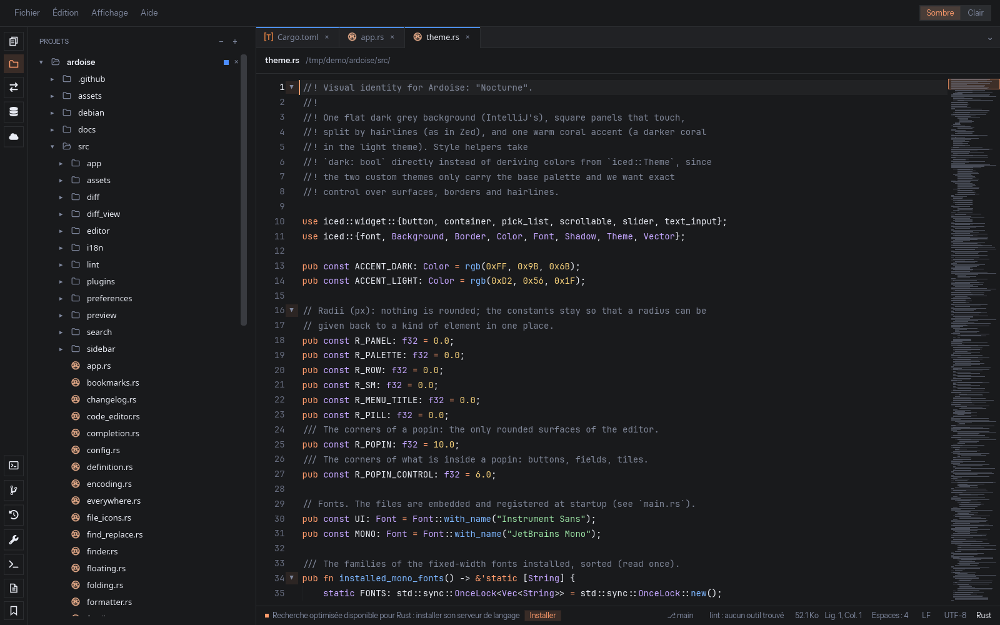
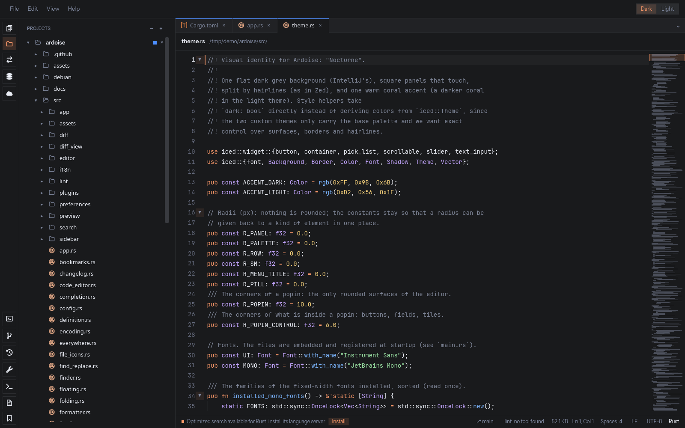
Ce qui compte, rien de superflu.What matters, nothing superfluous.
Rapide et natifFast and native
Une application native en Rust, pas une page web emballée. Elle s'ouvre vite, reste réactive sur de gros fichiers et garde votre session d'une fois sur l'autre, même le texte non enregistré.A native Rust application, not a wrapped web page. It opens fast, stays responsive on large files and keeps your session between runs, unsaved text included.
Simple au départSimple to begin with
Un éditeur sobre à l'installation. Ce dont vous avez besoin s'ajoute depuis Préférences › Plugins — ou dès le premier lancement, dans une fenêtre d'accueil.A plain editor out of the box. What you need is added from Preferences › Plugins — or on first launch, in a welcome window.
Chez vous, tout simplementYours, plainly
Fichiers locaux, session stockée sur votre machine et lisible par vous seul, mots de passe des plugins dans le trousseau du système. Désinstallation complète en une commande.Local files, a session stored on your machine and readable by you only, plugin passwords in the system keychain. A complete uninstall in one command.
Mises à jour vérifiéesVerified updates
Aide › Rechercher des mises à jour. Les versions sont signées (Ed25519) ; une mise à jour dont la signature ou la somme de contrôle ne correspond pas est refusée.Help › Check for updates. Releases are signed (Ed25519); an update whose signature or checksum does not match is refused.
Aller à la définition, sans configurationGo to definition, no setup
Ctrl+clic (Cmd+clic sur macOS) sur une fonction, une variable, une classe ou une interface : l'éditeur saute à sa définition. Sur la définition elle-même, il liste où elle est utilisée. Il ne répond que s'il est sûr.Ctrl+click (Cmd+click on macOS) on a function, variable, class or interface and the editor jumps to where it is defined. On the definition itself, it lists where it is used. It only answers when it is sure.
- Précédent / Suivant (Alt+←/→, boutons de la souris) à travers les sauts, onglets comprisBack / Forward (Alt+←/→, mouse buttons) across your jumps, tabs included
- Serveurs de langage facultatifs, installés sans droits administrateurOptional language servers, installed without administrator rights
- Sans serveur : une recherche de motifs prudenteWithout one: a careful pattern search
Ctrl+clic sur un appel de fonction : le fichier de la définition s'ouvre à la bonne ligne ; puis Alt+← pour revenir. Sur un projet réel (le code d'Ardoise convient).Ctrl+click a function call: the definition file opens at the right line; then Alt+← to go back.
Vidéo à venirVideo to comeColoration, pliage, recherche : l'essentiel, bien faitHighlighting, folding, search: the essentials, done well
Plus de 30 langages via des grammaires TextMate, pliage des blocs, commentaires et sections Markdown depuis la marge, minimap, recherche et remplacement avec expressions régulières, édition multi-curseurs, formatage par prettier, rustfmt et autres outils externes.30+ languages through TextMate grammars, folding of blocks, comments and Markdown sections from the gutter, a minimap, search and replace with regular expressions, multiple cursors, formatting through prettier, rustfmt and other external tools.
- Thème sombre et clair, police au choix parmi celles à chasse fixe installéesDark and light themes, text font chosen among the installed fixed-width fonts
- Duplication, déplacement, commentaire et indentation de lignesLine duplication, moving, commenting and indenting
- Aperçu Markdown et arbre JSONMarkdown preview and JSON tree
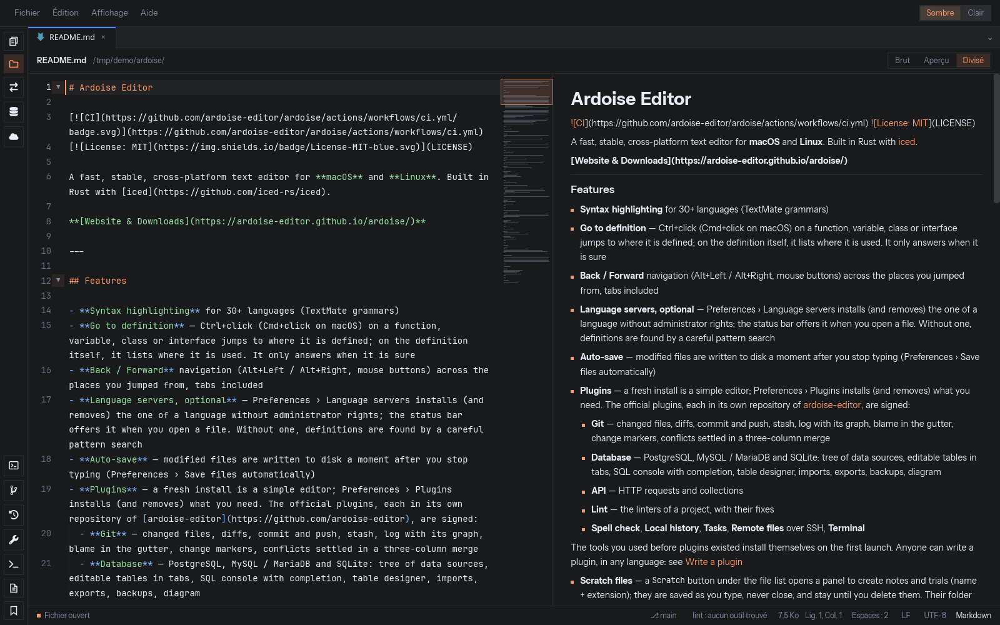
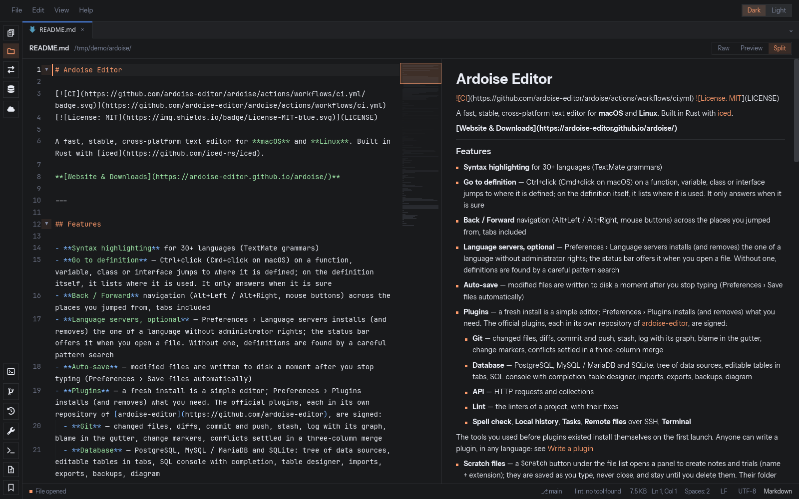
Fenêtre avec un fichier Markdown en mode « Partagé » (texte et aperçu côte à côte), pliage visible dans la marge, minimap à droite.Window with a Markdown file in Split mode (text and preview side by side), folding chevrons in the gutter, minimap on the right.
Capture à venirScreenshot to comeTout trouver depuis un seul champFind everything from one field
« Rechercher partout » réunit fichiers, classes, symboles, actions, texte des fichiers et ce que proposent les plugins (branches, commits…). Tapez nom:ligne pour aller à une ligne, / pour les réglages et les pages.“Search everywhere” gathers files, classes, symbols, actions, text in files and what plugins offer (branches, commits…). Type name:line to go to a line, / for settings and pages.
- Onglets Tout, Classes, Fichiers, Symboles, Actions, Texte, PluginsTabs All, Classes, Files, Symbols, Actions, Text, Plugins
- Chaque action a son raccourci, que vous pouvez changerEvery action has a shortcut you can change
- Les menus et actions s'éteignent quand elles ne peuvent rien faireMenus and actions switch off when they cannot do anything
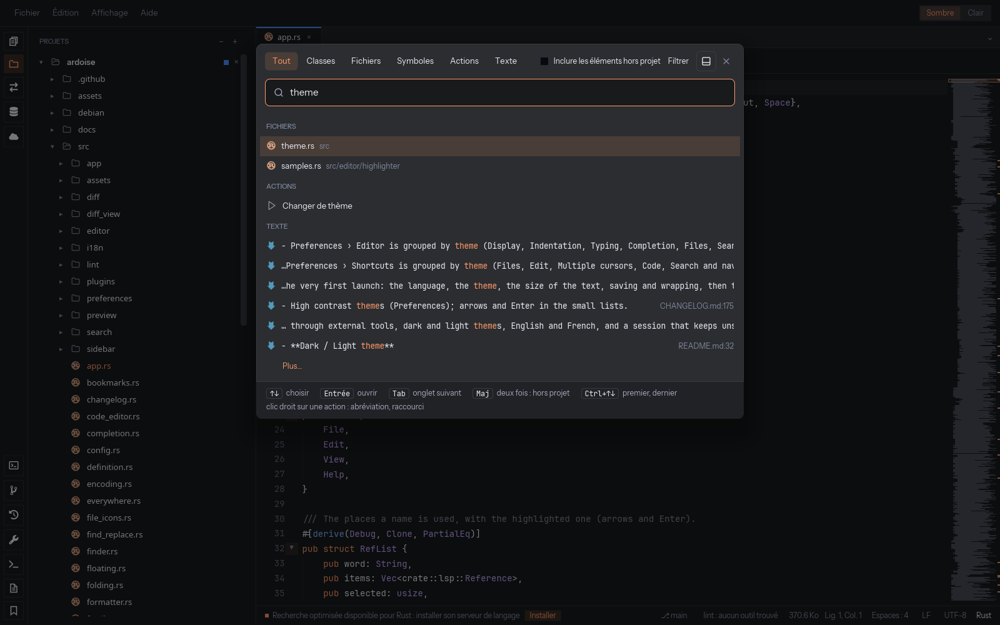
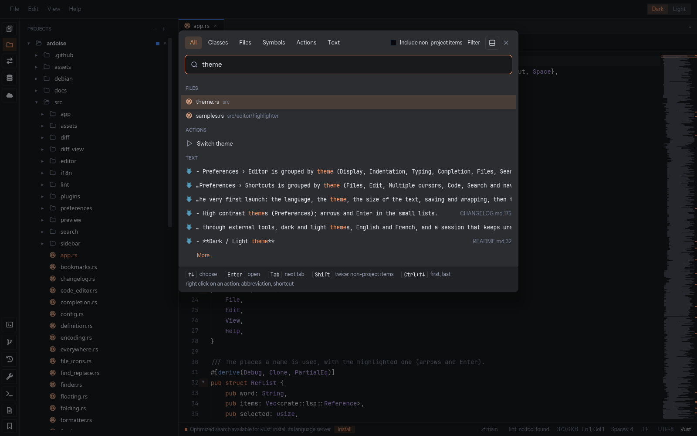
La fenêtre « Rechercher partout » ouverte sur l'onglet Tout, avec une saisie et des résultats de plusieurs types.The Search everywhere window open on the All tab, with a query and results of several kinds.
Capture à venirScreenshot to comeNotes jetables, signets, projetsScratch files, bookmarks, projects
Le bouton « Scratch » sous la liste des fichiers crée des notes et essais qui s'enregistrent en tapant et restent jusqu'à leur suppression. Le panneau des signets liste chaque fichier marqué avec ses lignes ; un ruban jaune apparaît dans la marge et la minimap.The “Scratch” button under the file list creates notes and trials saved as you type that stay until you delete them. The bookmarks panel lists each marked file with its lines; a yellow ribbon shows in the gutter and the minimap.
- Plusieurs projets ouverts dans la barre latéraleSeveral projects open in the sidebar
- Fenêtre scindée à droite ou en dessousSplit the window right or below
- Menu contextuel dans les zones vides des panneauxContext menu on the empty room of the panels
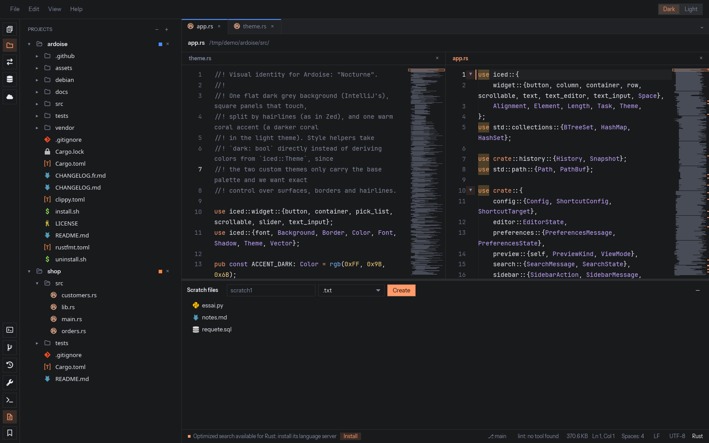
Barre latérale avec le panneau Projets déplié et le panneau Scratch ouvert, deux fichiers côte à côte en fenêtre scindée.Sidebar with the Projects panel expanded and the Scratch panel open, two files side by side in a split window.
Capture à venirScreenshot to comeSombre, clair, et vos yeux d'abord.Dark, light, and your eyes first.
Deux thèmes mémorisés d'un lancement à l'autre, un mode contraste élevé, la police et la taille du texte à votre main.Two themes remembered between launches, a high-contrast mode, the font and text size in your hands.
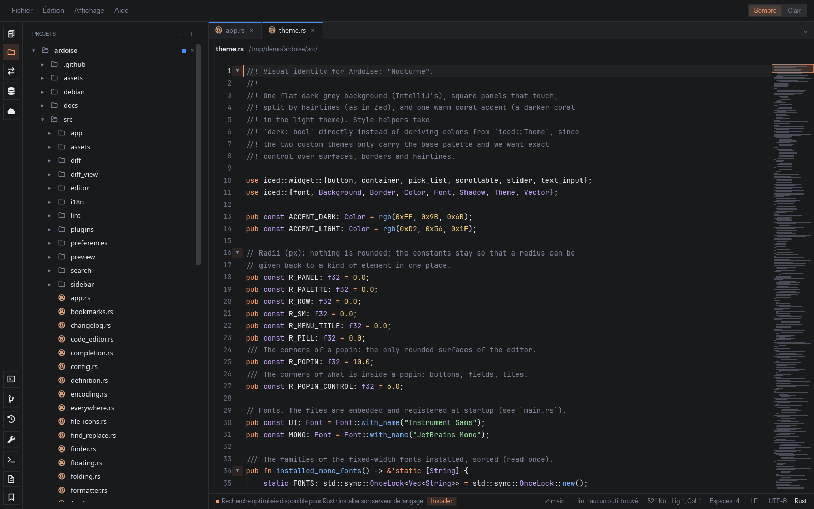
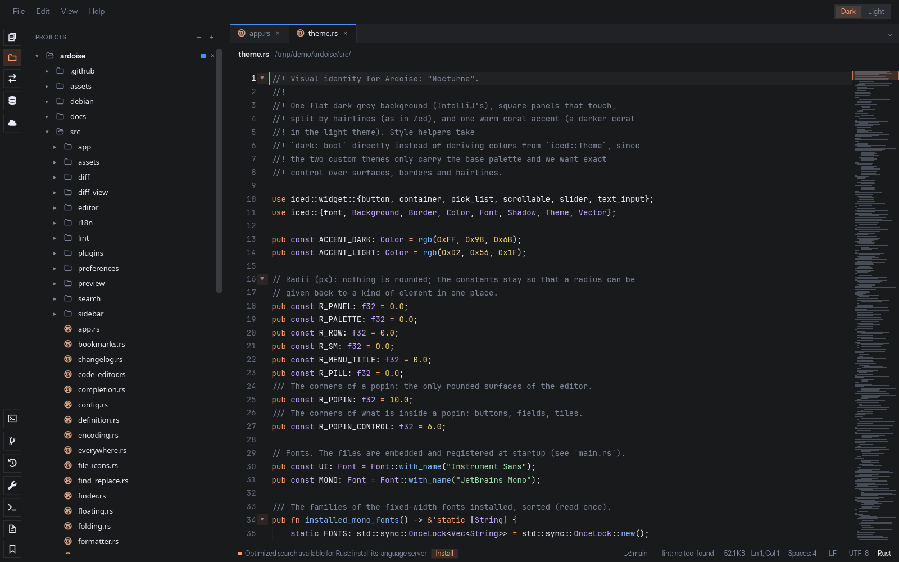
La même fenêtre en thème sombre (le même fichier ouvert que dans le thème clair, pour les comparer).The same window in the dark theme (same open file as the light one).
Capture à venirScreenshot to come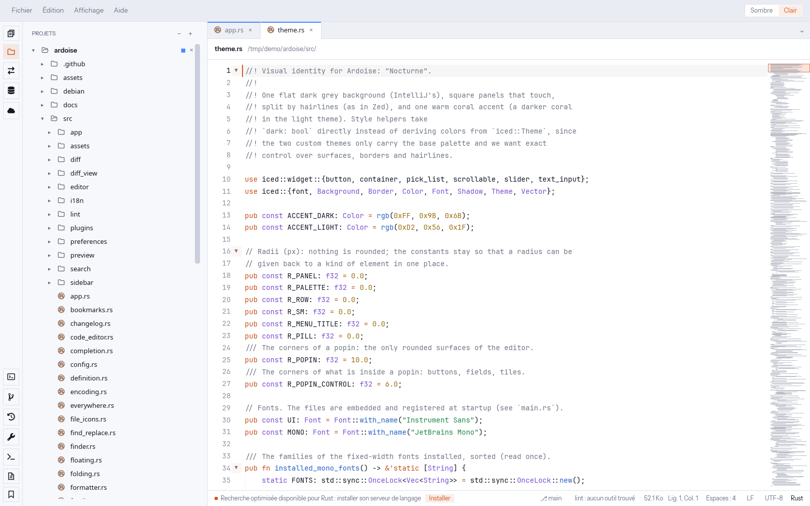
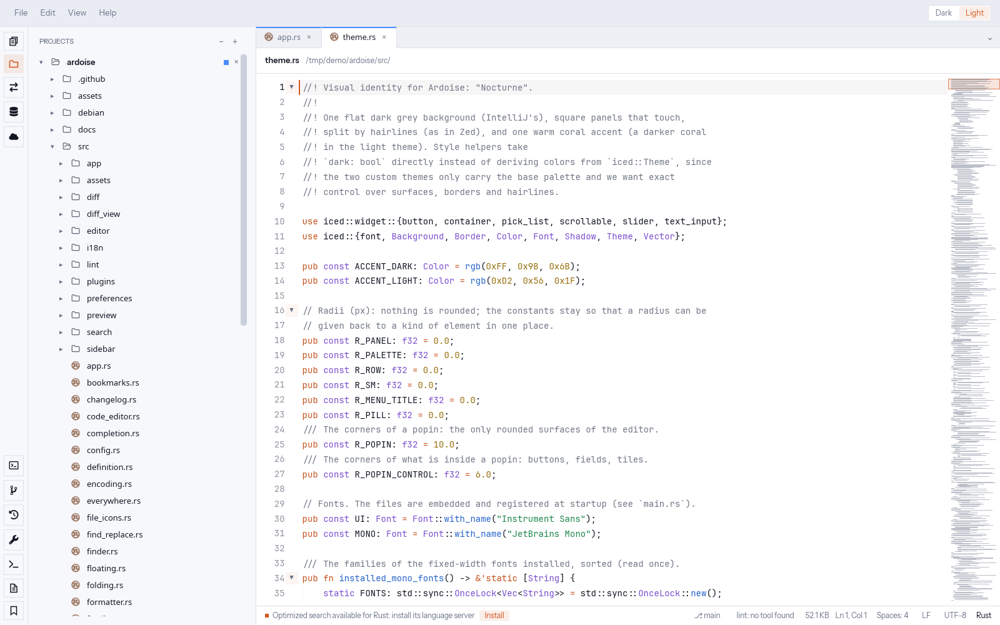
La même fenêtre en thème clair, même fichier, même position.The same window in the light theme, same file, same position.
Capture à venirScreenshot to comeUn éditeur simple, des plugins pour le reste.A plain editor, plugins for the rest.
Neuf plugins officiels, chacun dans son propre dépôt, signés et installables depuis Préférences › Plugins. Les outils que vous utilisiez avant l'arrivée des plugins s'installent d'eux-mêmes au premier lancement.Nine official plugins, each in its own repository, signed and installable from Preferences › Plugins. The tools you used before plugins existed install themselves on first launch.
GitGit
Git complet, dans un panneau sous l'éditeur.Full Git, in a panel under the editor.
DécouvrirDiscover →Base de donnéesDatabase
PostgreSQL, MySQL/MariaDB et SQLite : explorer, modifier, interroger.PostgreSQL, MySQL/MariaDB and SQLite: browse, edit, query.
DécouvrirDiscover →APIAPI
Un Postman léger : requêtes, collections, environnements, tests.A light Postman: requests, collections, environments, tests.
DécouvrirDiscover →LintLint
Les problèmes de vos fichiers, soulignés pendant la frappe, avec leurs corrections.The problems in your files, underlined as you type, with their fixes.
DécouvrirDiscover →OrthographeSpelling
Les mots mal orthographiés soulignés, avec suggestions et dictionnaire personnel.Misspelled words underlined, with suggestions and a personal dictionary.
DécouvrirDiscover →Historique localLocal History
Ce qu'étaient vos fichiers, gardé sur la machine, que Git le sache ou non.What your files were, kept on this machine whether Git knows it or not.
DécouvrirDiscover →TâchesTasks
Compiler, tester et lancer les commandes d'un projet, avec leur sortie.Build, test and run a project's commands, with their output.
DécouvrirDiscover →Fichiers distantsRemote Files
Ouvrir et modifier les fichiers d'une autre machine par SSH.Open and edit the files of another machine over SSH.
DécouvrirDiscover →TerminalTerminal
Des shells en onglets sous l'éditeur, avec historique et recherche.Shells in tabs under the editor, with history and search.
DécouvrirDiscover →Le vôtreYour own
Un plugin est un programme et un fichier plugin.json, dans le langage de votre choix.A plugin is a program and a plugin.json file, in the language of your choice.
Créer un pluginWrite a plugin →Voyez-le travailler.See it at work.
Ouvrir un projet, deux onglets, recherche partout, changer de thème, ouvrir les Préférences. Court et rythmé.Open a project, two tabs, search everywhere, switch theme, open the Preferences. Short and brisk.
Vidéo à venirVideo to comeVisite de 60 secondesA 60-second tour
Ouvrir un projet, deux onglets, recherche partout, changer de thème, ouvrir les Préférences. Court et rythmé.Open a project, two tabs, search everywhere, switch theme, open the Preferences. Short and brisk.
La fenêtre d'accueil : langue, thème, taille du texte, puis installation de plugins en un clic.The welcome window: language, theme, text size, then installing plugins in one click.
Vidéo à venirVideo to comePremier lancementFirst launch
La fenêtre d'accueil : langue, thème, taille du texte, puis installation de plugins en un clic.The welcome window: language, theme, text size, then installing plugins in one click.
Préférences › Plugins : chercher « Git », installer, le panneau apparaît dans l'éditeur.Preferences › Plugins: search “Git”, install, the panel appears in the editor.
Vidéo à venirVideo to comeInstaller un pluginInstall a plugin
Préférences › Plugins : chercher « Git », installer, le panneau apparaît dans l'éditeur.Preferences › Plugins: search “Git”, install, the panel appears in the editor.
Questions fréquentesFrequently asked
Sur quels systèmes fonctionne Ardoise ?Which systems does Ardoise run on?
Est-ce vraiment libre ?Is it really free?
Les plugins sont-ils sûrs ?Are plugins safe?
Où sont mes données ?Where is my data?
~/.local/share/ardoise/session.json (~/Library/Application Support/ardoise sur macOS), lisible par vous seul. Supprimez ce dossier pour l'oublier.The session (unsaved text included) is in ~/.local/share/ardoise/session.json (~/Library/Application Support/ardoise on macOS), readable by you only. Delete that folder to forget it.Comment tout désinstaller ?How do I remove everything?
--keep-data.One command per install method, detailed on the Install page. The uninstall script also removes settings, session, plugins and keychain passwords, unless you pass --keep-data.Prêt à essayer ?Ready to try it?
Une ligne dans le terminal, et Ardoise est installé.One line in the terminal and Ardoise is installed.